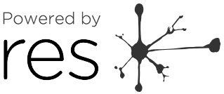

Although we won’t always know who is using a product powered by RES, so far we’ve worked with the following companies to include aspects of the RES project in their products. Get in touch at RESFeedback@bbc.co.uk if you’re powered by RES and want to be included here.
In 2014, BBC Connected Studio invited developers, digital agencies and start-ups to help build prototypes for the Research and Education Space platform. The following three prototypes were commissioned:
 Soundpools, developed by Touchpress, uses an immersive audio experience to tell a story.
Soundpools, developed by Touchpress, uses an immersive audio experience to tell a story. RESBuilder, developed by Gooii, allows the user to highlight text from any document, extract concepts from that text using the RES platform, and display all related media to the user.
RESBuilder, developed by Gooii, allows the user to highlight text from any document, extract concepts from that text using the RES platform, and display all related media to the user. Tunnels, developed by Amplify, uses a creative timeline of selected clips of archival media to explore a topic.
Tunnels, developed by Amplify, uses a creative timeline of selected clips of archival media to explore a topic.